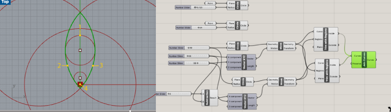
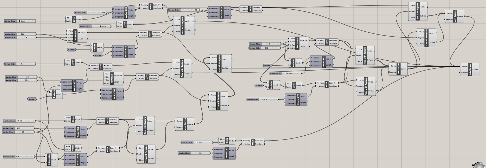

Concept
I designed and created 2 different types of a propagation station.
Source Files
Bill of Materials
| Items | Details | Price | Source |
|---|---|---|---|
| Test Tubes | Clear test tubes (9pc) | $9.99 | Amazon |
| Acrylic Sheets | 6 pack 8x12 inch colored cast acrylic sheet. 1/8" thick, translucent | $29.98 | Amazon |
| String lights | String Lights,Waterproof LED String Lights,10Ft/30 LEDs Fairy String Lights Starry, Battery Operated String Lights. (Warm White) | $6.39 | Amazon |
Idea Sketching

Idea sketching
The propagation station is going to look like stairs. Each little plate that holds a test tube will be a flower petal shape, and I'm going to lazer cut a acrylic sheet to create this shape. There are 6 flower petals and each petal holds one test tube.
Sketch
aaa
Top & bottom view
When you see this propagation station from the top, it will look like a flower. The shape of the base is also going to be a flower shape as well. I I'm going to create it with a 3D printer.

Stem
It is important to make sure that the stem is stable and the acrylic flower petals can hold test tubes filled with water without tilting. I decided to create Lego inspired round bricks to hold each acrylic plate tight.
Flower Petal Design with Grasshopper
Place all the circles
I created 4 circles, which will form the shape of a flower petal. (You can see the petal shape in the middle of this geometry.) I needed to make sure that the two small circles perfectly touch the large ciecles witout crossing each other. The measurements on the sketch was not very precice, so I had to scale the large circles down a little by little until they touch the small circles
Trim and join
The next step is to trim the unnecessary lines off. Since I wasn't sure if there are ways to trim multiple lines with multiple regions, I ended up trimming one line at a time. The green lines are the first lines that I trimmed and the four lines highlighted in yellow are the lines that eventually formed the petal shape.
The outline is ready
Successfully trimmed off the unnecessary lines and join the rest to create the petal shape. I added two little circle to make holes (one holds a test tube and another holds a stem.) Now the outline is ready for laser cutting.
The next task was to create a tube 3cm diameter and 3cm high